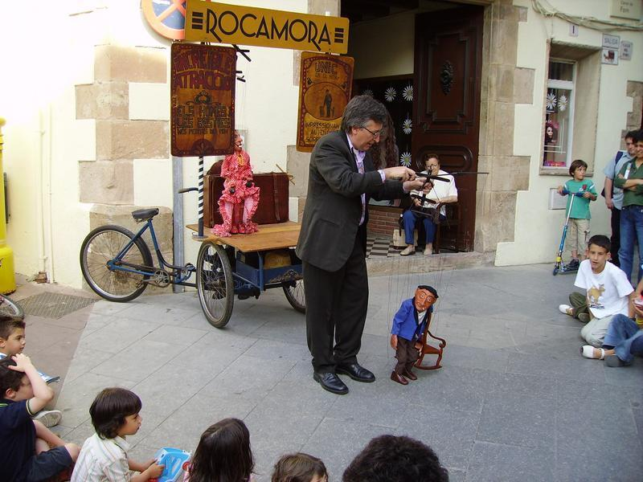

El municipi
-

Descripció
Caldes de Montbui és una vila que, a poc més de 30 km de Barcelona, gira des de temps remots entorn de l'aigua calenta. Té el privilegi de ser el primer poble termal de Catalunya i de posseir les termes romanes més ben conservades de la península Ibèrica.
-

Història
Els conqueridors romans van fundar una estació balneària, al voltant de la qual es va desenvolupar el nucli urbà Aquae Calidae. Ho van realitzar aprofitant fonts naturals d'aigua calenta que brollaven des de les capes freàtiques del subsòl.
-
 Festes i tradicions
Caldes de Montbui és una vila dinàmica i festiva que conserva les seves festes i tradicions centenàries, com ara la Festa de Sant Antoni, la Festa de Corpus, la celebració de la Festa Major o l'Aplec del Remei.